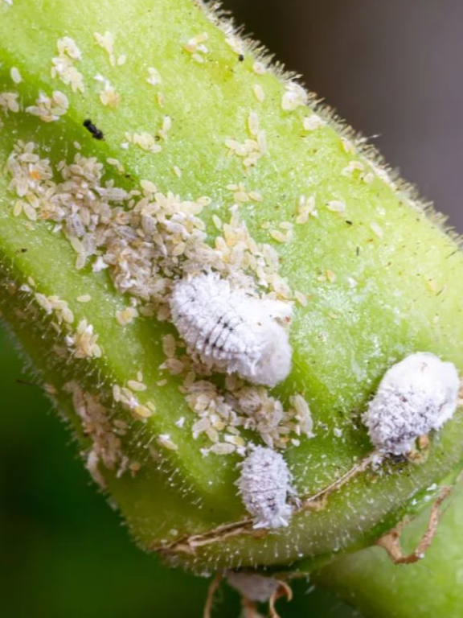
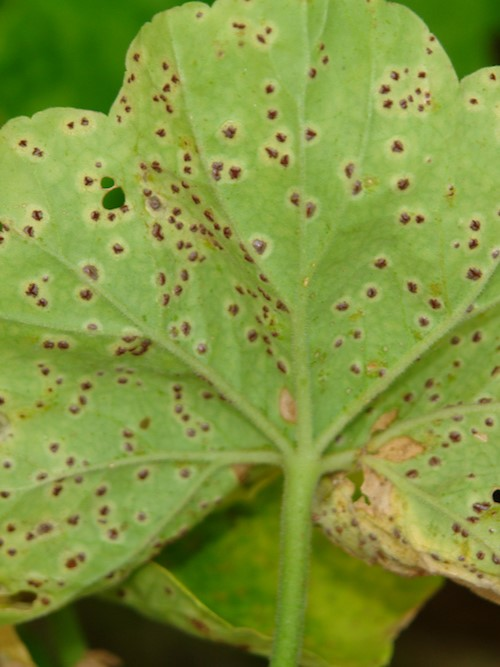
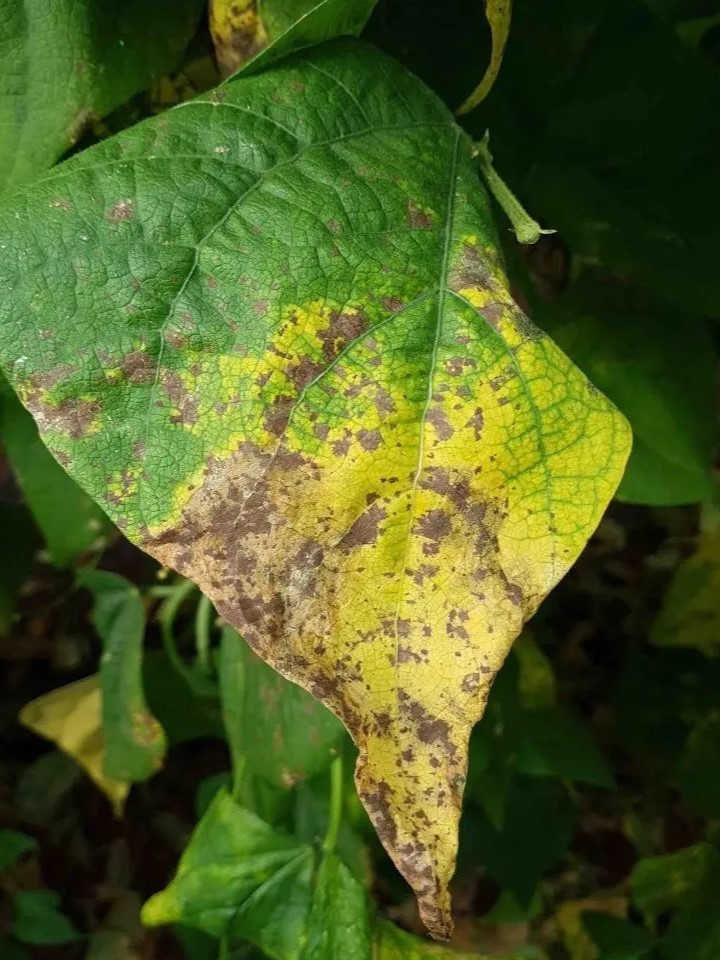
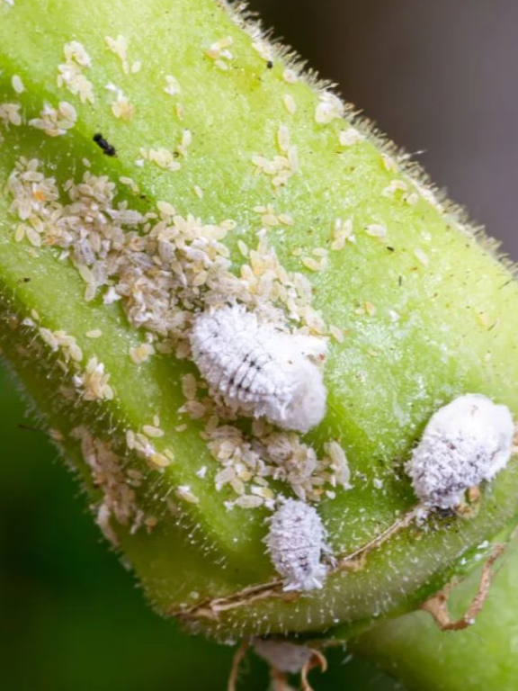
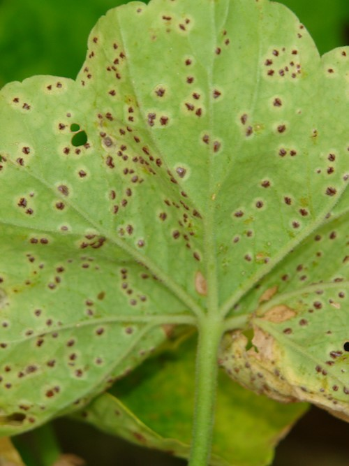
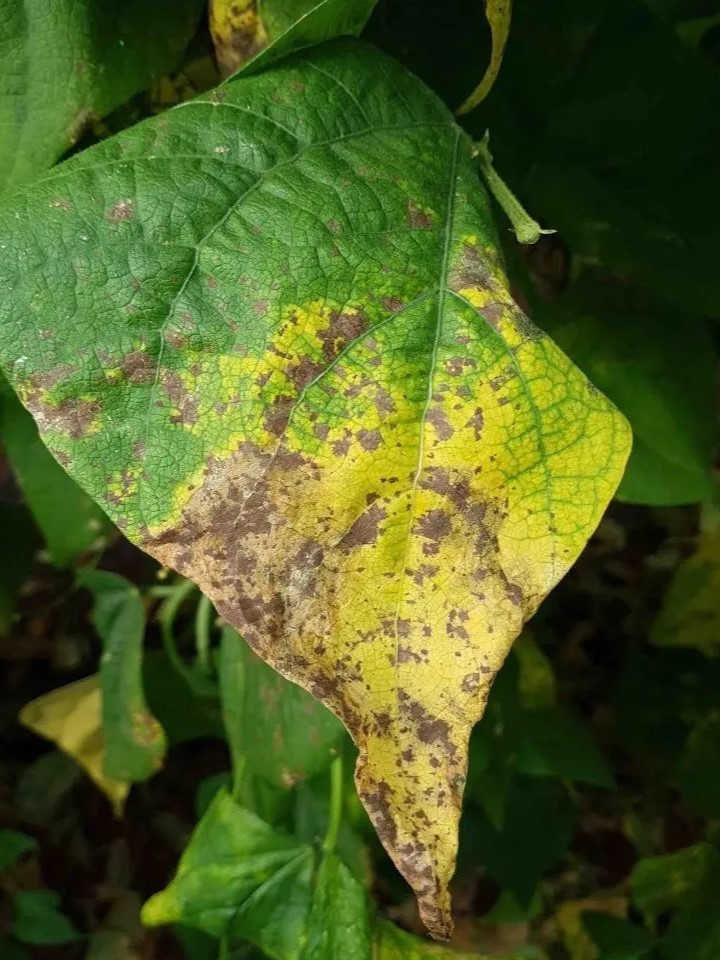

PLAGAS Y ENFERMEDADES EN jARDINERIA
En esta sección, aprenderás a identificar, prevenir y tratar las principales plagas y enfermedades que pueden afectar a tus plantas. Conocer sus síntomas y actuar a tiempo es clave para mantener un jardín sano y vibrante.
🐛 Plagas Comunes y Cómo Combatirlas
Aquí encontrarás una lista de las plagas más frecuentes en jardinería, cómo identificarlas y métodos para eliminarlas:
- Pulgones (Áfidos)
- Síntomas: Hojas enrolladas, melaza pegajosa y presencia de hormigas.
- Solución: Aplicar agua con jabón potásico, aceite de neem o liberar mariquitas (depredadores naturales).
- Cochinillas
- Síntomas: Manchas blancas algodonosas en tallos y hojas, debilitamiento de la planta.
- Solución: Retirar manualmente con un algodón empapado en alcohol o usar jabón potásico.
- Araña Roja
- Síntomas: Hojas con puntos amarillos y presencia de telarañas finas.
- Solución: Aumentar la humedad y aplicar infusión de ajo o aceite de neem.
- Mosca Blanca
- Síntomas: Hojas amarillentas y pequeñas moscas blancas en el envés.
- Solución: Trampas adhesivas amarillas y pulverizar con extracto de ajo o jabón potásico.
- Orugas y Gusanos
- Síntomas: Hojas mordisqueadas y presencia de excrementos pequeños.
- Solución: Retirar manualmente o aplicar Bacillus thuringiensis (BT), un insecticida biológico.
🦠 Enfermedades Frecuentes y Tratamientos
Las enfermedades pueden ser causadas por hongos, bacterias o virus. Aquí te mostramos algunas de las más comunes:
- Mildiu
- Síntomas: Manchas amarillas en la parte superior de las hojas y moho blanco en el envés.
- Solución: Aplicar fungicidas a base de cobre y mejorar la ventilación de la planta.
- Oidio
- Síntomas: Polvo blanco en hojas, tallos y flores.
- Solución: Aplicar azufre en polvo o fungicidas naturales como leche diluida en agua.
- Podredumbre Radicular
- Síntomas: Raíces blandas y negras, marchitamiento repentino.
- Solución: Evitar el exceso de riego y mejorar el drenaje del suelo.
- Roya
- Síntomas: Manchas anaranjadas en la parte inferior de las hojas.
- Solución: Retirar hojas afectadas y aplicar fungicida ecológico.
- Virus del Mosaico
- Síntomas: Hojas con patrones amarillos y deformaciones.
- Solución: No hay cura; se recomienda eliminar la planta afectada para evitar contagios.
🛡️ Prevención y Cuidados Generales
- Mantén un riego adecuado, evitando encharcamientos.
- Usa tierra y sustratos de calidad para fortalecer las raíces.
- Aplica remedios naturales como infusiones de ajo, ortiga o cola de caballo.
- Fomenta la biodiversidad con plantas que repelan insectos (como la albahaca o el romero)
- Inspecciona periódicamente las hojas y tallos en busca de signos de problemas.
 




